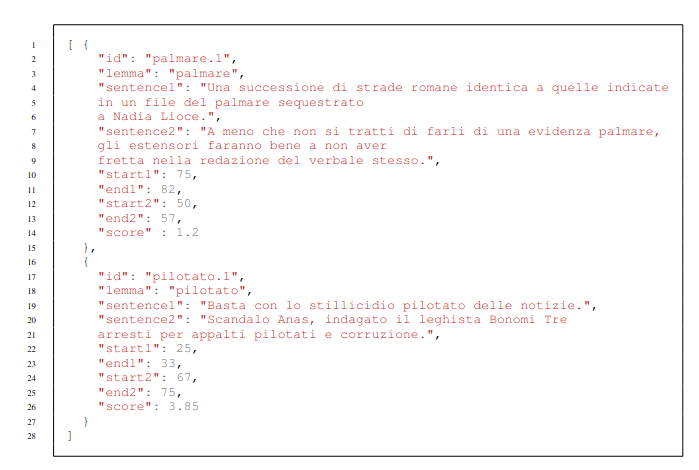

Welcome to WiC-ITA
WiC-ITA is the first Word-in-Context task for Italian, organized within
Evalita 2023, the 8th evaluation campaign of Natural Language Processing and Speech tools for Italian, which will be held in Parma (Italy) (7th-8th September 2023).
News
WiC-ITA (Word in Context for Italian) at EVALITA 2023 has been accepted: October 25th, 2023
Task Description
The general goal of the WiC-ITA task is to establish if a word w occurring in two different sentences s_1 and s_2 has the same meaning or not.
In particular, our task is composed of two sub-tasks: the binary classification (Sub-task 1) and the ranking (Sub-task 2).

References
Contacts
If you have any question, contact us: